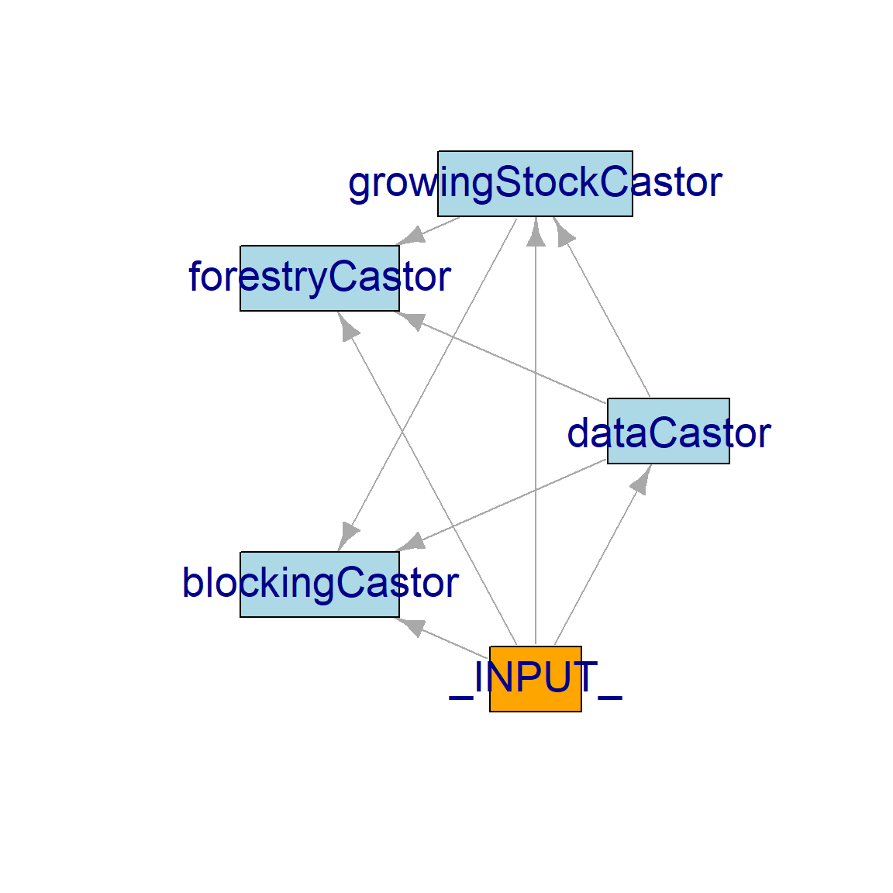

14 Castor workflow with setupProject
Castor is a forest and land-use model used to simulate forest harvest and its effects on multiple forest values, which include not only timber, but also habitat for several wildlife (e.g. caribou, fisher). It is a fully open-source model, implemented in SpaDES, developed and maintained by researchers at the Forest Analysis and Inventory Branch, BC Ministry of Forests.
In this chapter, we demonstrate how to set up a Castor workflow using setupProject from the SpaDES.project package. The code was adapted from this Castor scenario, with some modifications to streamline the code and accommodate the use of SpaDES.project functions.
A bare-bones version of this example is also available in this .R script
14.1 Workflow setup
SpaDES.project functions expect SpaDES modules to either exist locally, or at root level of separate repositories. This is not the case with Castor modules, which are in a nested folder (i.e. a folder in a folder tree) of a single GitHub repository.
SpaDES.project will eventually be able to deal with this1, but for now we work around this issue by using a custom function called getCastorModulesAndDB. This function will also download the demo SQLite database from Google Drive2. You’ll be prompted to authorise this operation and a browser window will open for this. Make sure you give tidyverse read/write access to your files:
After the “workaround” setupProject does all the heavy-lifting of setting up the workflow, namely installing all package dependencies listed in the several modules and in setupProject(..., packages), creating all the necessary folders, sourcing additional files and creating parameter, inputs and outputs lists – see ?setupProject.
Code
## install/load necessary packages
repos <- c("predictiveecology.r-universe.dev", getOption("repos"))
install.packages(c("SpaDES.project", "googledrive", "reproducible"),
repos = repos, dependencies = TRUE)
library(SpaDES.project)
## get Castor modules and functions
setupFunctions(paths = list("projectPath" = "~/"),
functions = c("PredictiveEcology/PredictiveEcology.org@main/tutos/castorExample/getCastorModulesAndDB.R",
"PredictiveEcology/PredictiveEcology.org@main/tutos/castorExample/params.R"),
overwrite = TRUE)
outMod <- getCastorModulesAndDB(paths = list("modulePath" = "~/tutos/castorExample/modules/",
"projectPath" = "~/tutos/castorExample"),
modules = c("dataCastor",
"growingStockCastor",
"forestryCastor",
"blockingCastor"),
dbURL = "https://drive.google.com/file/d/1-2POunzC7aFbkKK5LeBJNsFYMBBY8dNx/view?usp=sharing",
dbPath = "~/tutos/castorExample/R/scenarios/comparison_stsm")
## set up the workflow paths, dependencies and modules
## as well as simulation parameters, (some) inputs and outputs
out <- setupProject(
paths = list("inputPath" = "modules/forestryCastor/inputs",
"outputPath" = "R/scenarios/comparison_stsm/outputs",
"modulePath" = "modules/",
"cachePath" = "modules/forestryCastor",
"projectPath" = "~/tutos/castorExample"),
modules = names(outMod$modules),
options = list(repos = repos),
functions = "bcgov/castor@main/R/functions/R_Postgres.R",
## install and load
require = "dplyr",
## install but don't load these:
packages = c(
"DBI",
"DiagrammeR",
"keyring",
"rgdal",
"RPostgreSQL",
"sp",
"terra"
),
params = "params.R",
times = list(start = 0, end = 20),
outputs = {
data.frame(objectName = c("harvestReport",
"growingStockReport"))
},
scenario = {
data.table(name = "stsm_base_case",
description = paste("Priority queue = oldest first. Adjacency constraint",
"= None. Includes roads (mst) and blocks (pre).",
"Harvest flow = 147,300 m3/year in decade 1, 133,500",
"m3/year in decade 2, 132,300 m3/year in decades 3 to",
"14 and 135,400 m3/year in decades 15 to 25.",
"Minimum harvest age = 80 and minimum harvest volume = 150"))
},
harvestFlow = {
rbindlist(list(data.table(compartment = "tsa99",
partition = ' age > 79 AND vol > 149 ',
period = rep( seq (from = 1,
to = 1,
by = 1),
1),
flow = 1473000,
partition_type = 'live'),
data.table(compartment = "tsa99",
partition = ' age > 79 AND vol > 149 ',
period = rep( seq (from = 2,
to = 2,
by = 1),
1),
flow = 1335000,
partition_type = 'live'),
data.table(compartment = "tsa99",
partition = ' age > 79 AND vol > 149 ',
period = rep( seq (from = 3,
to = 14,
by = 1),
1),
flow = 1323000,
partition_type = 'live'),
data.table(compartment = "tsa99",
partition = ' age > 79 AND vol > 149 ',
period = rep( seq (from = 15,
to = 25,
by = 1),
1),
flow = 1354000,
partition_type = 'live')
))
},
Restart = TRUE
)14.2 Initialise the model and inspect simList
setupProject() returns a names list containing values that can be passed as argument to simInit()3.
We use do.call() to pass the whole list of arguments to simInit.
Code
## initialize simulation
castorInit <- do.call(SpaDES.core::simInit, out)Another (more verbose) option would to call simInit directly:
Code
castorInit <- SpaDES.core::simInit(
times = out$times,
params = out$params,
modules = out$modules,
objects = list(scenario = out$scenario,
harvestFlow = out$harvestFlow)
)Use the following functions to access workflow/model properties. events(), for instance will output the scheduled events, which at this point are only the init events of each module as you can see in the output below.
Code
## inspect the `simList`
SpaDES.core::params(castorInit)
SpaDES.core::inputs(castorInit)
SpaDES.core::outputs(castorInit)
SpaDES.core::times(castorInit)
## scheduled events
SpaDES.core::events(castorInit) eventTime moduleName eventType eventPriority
<num> <char> <char> <num>
1: 0 checkpoint init 0
2: 0 save init 0
3: 0 progress init 0
4: 0 load init 0
5: 0 dataCastor init 1
6: 0 growingStockCastor init 1
7: 0 forestryCastor init 1
8: 0 blockingCastor init 114.3 Visualize the workflow
moduleDiagram() and objectDiagram() are great to visualise how each module interacts with the other. Recall that these interactions arise from object “exchanges” between modules, which are deduced by simInit() from module metadata (Figure 14.3) – i.e., if a module’s inputs are another’s outputs, then the first module will follow the second.
Code
SpaDES.core::moduleDiagram(castorInit)
SpaDES.core::objectDiagram(castorInit)


14.4 Run simulation
spades() runs the simulation, beginning with the execution of the init events. Notice how the result of outputs() differs from previously.
Code
castorSim <- SpaDES.core::spades(castorInit)
## we now have outputs
SpaDES.core::outputs(castorSim) objectName
1 harvestReport
2 growingStockReport
file
1 C:/Eliot/tutos/castorExample/R/scenarios/comparison_stsm/outputs/harvestReport_year20.rds
2 C:/Eliot/tutos/castorExample/R/scenarios/comparison_stsm/outputs/growingStockReport_year20.rds
fun package saveTime saved arguments
1 saveRDS base 20 TRUE NA
2 saveRDS base 20 TRUE NAcompleted(castorSim) shows the chaining of events that was produced and run by spades(). The sequence of steps in the workflow therefore arises from each module’s events and their scheduling, rather than being explicitly imposed by the user.
Code
SpaDES.core::completed(castorSim) eventTime moduleName eventType eventPriority
<num> <char> <char> <num>
1: 0 checkpoint init 0
2: 0 save init 0
3: 0 progress init 0
4: 0 load init 0
5: 0 dataCastor init 1
6: 0 growingStockCastor init 1
7: 0 forestryCastor init 1
8: 0 blockingCastor init 1
....We suggest omitting the blockingCastor module in setupProject() and rerunning the workflow again to see how spades is capable of re-generating a new workflow with little effort from the user.
Code
modules <- c("dataCastor",
"growingStockCastor",
"forestryCastor")
out <- setupProject(
paths = list("inputPath" = "modules/forestryCastor/inputs",
"outputPath" = "/R/scenarios/comparison_stsm/outputs",
"modulePath" = "modules/",
"cachePath" = "modules/forestryCastor",
"projectPath" = "~/tutos/castorExample/"),
modules = modules,
functions = "bcgov/castor@main/R/functions/R_Postgres.R",
## install and load
require = "dplyr",
## install but don't load these:
packages = c(
"DBI",
"keyring",
"rgdal",
"RPostgreSQL",
"sp",
"terra"
),
params = "params.R",
times = list(start = 0, end = 20),
outputs = {
data.frame(objectName = c("harvestReport",
"growingStockReport"))
},
scenario = {
data.table(name = "stsm_base_case",
description = paste("Priority queue = oldest first. Adjacency constraint",
"= None. Includes roads (mst) and blocks (pre).",
"Harvest flow = 147,300 m3/year in decade 1, 133,500",
"m3/year in decade 2, 132,300 m3/year in decades 3 to",
"14 and 135,400 m3/year in decades 15 to 25.",
"Minimum harvest age = 80 and minimum harvest volume = 150"))
},
harvestFlow = {
rbindlist(list(data.table(compartment = "tsa99",
partition = ' age > 79 AND vol > 149 ',
period = rep( seq (from = 1,
to = 1,
by = 1),
1),
flow = 1473000,
partition_type = 'live'),
data.table(compartment = "tsa99",
partition = ' age > 79 AND vol > 149 ',
period = rep( seq (from = 2,
to = 2,
by = 1),
1),
flow = 1335000,
partition_type = 'live'),
data.table(compartment = "tsa99",
partition = ' age > 79 AND vol > 149 ',
period = rep( seq (from = 3,
to = 14,
by = 1),
1),
flow = 1323000,
partition_type = 'live'),
data.table(compartment = "tsa99",
partition = ' age > 79 AND vol > 149 ',
period = rep( seq (from = 15,
to = 25,
by = 1),
1),
flow = 1354000,
partition_type = 'live')
))
},
Restart = TRUE
)
## initialize and run simulation in one go
castorSim2 <- do.call(SpaDES.core::simInitAndSpades, out)SpaDES.projectis currently being adapted to deal with modules nested in folders of GitHub repositories (instead of living in their own GitHub repositories). Hence, the code in this example is subject to changes in the near future.↩︎Using the
googledriveR package. See?googledrive::drive_authfor more information.↩︎